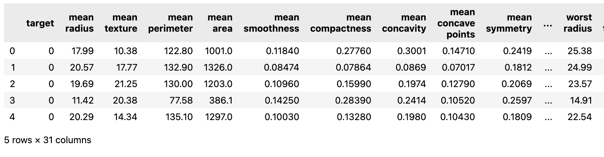
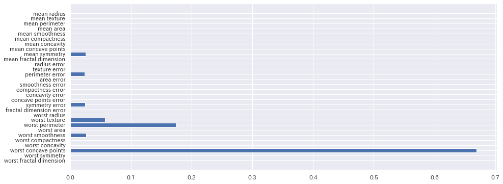
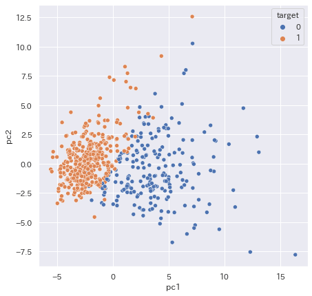
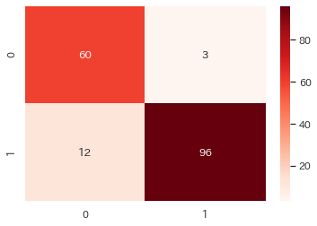
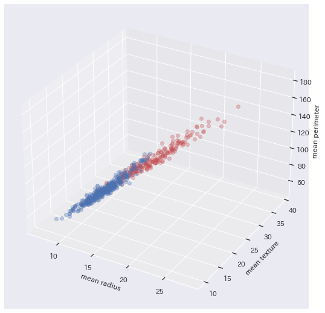
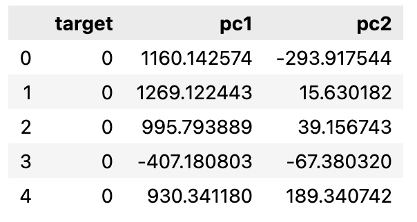
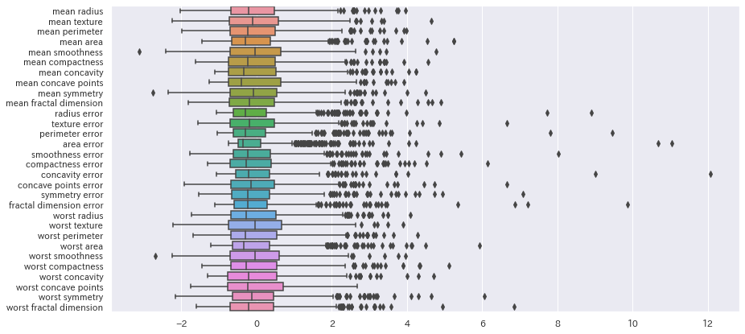

クラス分類問題#
機械学習 (machine learning) とは、 与えられた問題に対して、コンピュータ自身が学習し、学習結果を活かした問題解決を行うしくみのことです。 人工知能 (artificial inteligence) を実現する手段として活用されています。
今回は、クラス分類問題をとりあげ、いよいよ本格的な機械学習の世界に足を踏み入れていきます。
準備
import numpy as np
import pandas as pd
import matplotlib.pyplot as plt
import seaborn as sns
try:
import japanize_matplotlib #matplotlibの日本語化
except ModuleNotFoundError:
!pip install japanize_matplotlib
import japanize_matplotlib
sns.set(font="IPAexGothic") #日本語フォント設定
乳がん診断データセット#
乳がん診断データセットは、Breast Cancer Wisconsin (Diagnostic) Data Setに由来し、 乳腺腫瘤の穿刺吸引細胞診のデジタル画像から計算されたデータです。

1993 W.N. Street, W.H. Wolberg and O.L. Mangasarian Nuclear feature extraction for breast tumor diagnosis IS&T/SPIE 1993 International Symposium on Electronic Imaging: Science and Technology, volume 1905, pages 861-870, San Jose, CA, 1993. (abstract)
データの理解#
まずは、データをダウンロードして内容をみてみましょう。

最初のtargetカラムは、乳がんの診断結果になります。
良性は1、悪性は0のラベルがついています。
それに続いて、乳がんの診断に用いた
検査結果（たぶん、X線画像を分析し、腫瘍を測定した値）が続きます。
詳細は、専門医ではないので割愛させていただきます。
詳細がわからないデータでもデータ分析できるのかと思うかもしれません。 むしろ、決定木などで乳がんの予測モデルを構築することで、 重要度からどの項目が乳がんの診断に影響があるか分析するヒントになります。

説明変数と目的変数#
乳がんの診断モデルを準備していきましょう。 検査項目に関しては専門医でないため、どれが特徴量をよく表しているかわかりません。 全ての項目を説明変数にして、診断モデルを作成してみます。
X = df[df.columns[1:]] # target 以外
y = df['target']
print(f'データ数: {len(df)}, 説明変数の次元 {X.shape[1]}')
乳がん診断データセットでは、学習するデータの次元は、30次元になります。
この30次元のデータを、良性1 悪性0に分類することが予測になります。
ここで、通常の手順として、分類できるかどうかをみるため、 あらかじめ散布図などで、データの散らばりを確認します。

説明変数と目的変数#
続いて、ホールドアウト法によって、淡々とモデルを作ります。
from sklearn.model_selection import train_test_split
X_train, X_test, y_train, y_test = train_test_split(
X, y, test_size=0.3, random_state=0)
print('訓練データ数:', len(X_train))
print('テストデータ数:', len(X_test))
分類器(Classifier)#
前回、決定木を習いましたので、今回も決定木を使ってみたいと思います。
クラス分類のモデルを構築するポイントは、 Regressor の代わりにClassifierを使う点です。
注意：モデルが出力する値が数値データか、 カテゴリデータ（ラベル付けされたクラス）かの違いがあります。
DecisionTreeClassifierを正しく使えば、あとは同じように学習(fit)し、
予測する(predict)ことができます。
from sklearn.tree import DecisionTreeClassifier
model = DecisionTreeClassifier()
model.fit(X_train, y_train)
y_pred = model.predict(X_test)
print(y_test.values)
print(y_pred)
[0 1 1 1 1 1 1 1 1 1 1 1 1 1 1 0 1 0 0 0 0 0 1 1 0 1 1 0 1 0 1 0 1 0 1 0 1
0 1 0 0 1 0 1 1 0 1 1 1 0 0 0 0 1 1 1 1 1 1 0 0 0 1 1 0 1 0 0 0 1 1 0 1 0
0 1 1 1 1 1 0 0 0 1 0 1 1 1 0 0 1 0 1 0 1 1 0 1 1 1 1 1 1 1 0 1 0 1 0 0 1
0 0 1 1 1 1 1 1 1 1 1 0 1 0 1 1 1 1 1 0 1 1 1 1 1 1 0 0 1 1 1 0 1 1 0 1 0
1 1 1 1 1 1 1 0 1 0 1 0 0 1 1 0 1 0 0 0 1 1 1]
[0 1 1 1 1 1 1 1 1 1 0 1 1 0 1 0 1 0 0 0 0 0 1 1 0 1 1 0 1 0 1 0 1 0 1 0 1
0 1 0 0 1 0 1 1 0 1 1 1 0 0 0 0 1 1 1 0 1 0 0 0 0 1 1 0 0 0 0 0 1 1 0 1 1
0 1 1 1 1 1 0 0 0 1 0 1 1 1 0 0 1 0 1 0 1 1 0 0 1 1 1 1 1 0 0 1 0 1 0 1 1
0 0 1 1 1 0 1 1 1 1 1 0 1 0 0 1 1 1 1 0 1 1 1 1 1 1 0 0 1 1 1 0 1 1 0 1 0
1 1 1 0 1 0 1 0 1 1 1 0 0 1 0 0 1 0 0 0 1 1 1]
さて、どのくらい正確に分類されているのでしょうか？
混同行列#
クラス分類は、常に正しい分類をしてくれるとは限りません。 悪性なのに良性と間違って判断される場合もありますし、良性が悪性と判断される可能性もあります。
クラス分類器が出した予測結果と実際の結果を全て網羅したものが、混合行列になります。
Pythonで、混同行列を求めるには、
sklearn.metricsモジュールのconfusion_matrix()を用います。
第一引数に実測クラス（正解クラス）、第二引数に予測したクラスを指定します。
混同行列は、ヒートマップにして確認することも多くあります。
さて、混同行列の読み方ですが、次のように読みます。
- TP(True Positive): 良性かつ良性と予想される
- TN(True Negative): 悪性かつ悪性と判定される
- FN(False Negative, 偽陰性): 悪性であるが、良性と予想される
- FP(False Positive, 偽陽性): 良性であるが、悪性と予想される
定量的な評価指標#
- 正解率（accuracy）
- 適合率（precision, PPV）
- 再現率（recall, sensitivity, hit rate, TPR）
- F値（F-measure, F-score, F1-score ）
正解率(accuracy)#
正解率（accuracy）は、すべてのサンプルのうち正解したサンプルの割合です。
機械学習では、最も一般的に性能評価で用いられる指標です。
sklearn.metricsモジュールのaccuracy_score()で算出できます。
from sklearn.metrics import accuracy_score
accuracy = accuracy_score(y_test, y_pred)
print(f'正解率 {accuracy:.5f}')
学習済みの分類モデルmodelも、model.score(X, y)で簡単に算出できるように
なっています。
print(f'正解率(訓練)', model.score(X_train, y_train))
print(f'正解率(テスト)', model.score(X_test, y_test))
適合度(Precision)#
適合率（precision）は、陽性と予測されたサンプルのうち正解したサンプルの割合です。 FP（偽陽性）が大きくなると適合率は小さくなるので、偽陽性を避けたい場合に用います。
sklearn.metricsモジュールのprecision_score()で算出できます。
from sklearn.metrics import precision_score
precision = precision_score(y_test, y_pred)
print(f'適合率 {precision:.5f}')
再現率(Recall)#
再現率（recall）は実際に陽性のサンプルのうち正解したサンプルの割合です。 FN（偽陰性）が大きくなると再現率は小さくなるので、偽陰性を避けたい場合に用います。
sklearn.metricsモジュールのrecall_score()で算出できます。
from sklearn.metrics import recall_score
recall_score = recall_score(y_test, y_pred)
print(f'再現率 {recall:.5f}')
F値#
F値（F1-measure）は適合率と再現率の調和平均です。
sklearn.metricsモジュールのrecall_score()で算出できます。
詳しくは、F値の記事を参考にしてください。
ハイパーパラメータとグリッドサーチ#
定量的に正解率を計算できるようになったので、それに基づいて、 より正解率の高い分類モデルを作っていきましょう。
パラメータとモデルの正解率#
決定木の分類モデルを作成するとき、次のようなパラメータを設定することができます。
DecisionTreeClassifier(
criterion=’gini’,
splitter=’best’,
max_depth=4,
min_samples_split=3,
min_samples_leaf=1,
min_weight_fraction_leaf=0.0,
max_features=4,
random_state=None,
max_leaf_nodes=8,
min_impurity_split=1e-07,
class_weight=’balanced’,
presort=False
)
参考資料 * 公式のリファレンス * 決定木分析のパラメータ解説
最初のパラメータの与え方で、正解率は変わってきます。 少ししか変わらない場合もありますが、大きく影響するパラメータもあります。
model = DecisionTreeClassifier(criterion='gini', max_depth=2)
model.fit(X_train, y_train)
print(f'正解率(訓練)', model.score(X_train, y_train))
print(f'正解率(テスト)', model.score(X_test, y_test))
model = DecisionTreeClassifier(criterion='entropy', max_depth=5)
model.fit(X_train, y_train)
print(f'正解率(訓練)', model.score(X_train, y_train))
print(f'正解率(テスト)', model.score(X_test, y_test))
データサイエンティストやAIエンジニアは、 機械学習アルゴリズムの原理を理解し、経験を頼りにできるだけ良い パラメータを探し、正確さの高いモデルを構築していきます。
グリッドサーチ（★）#
グリッドサーチは、複数のパラメータの組み合わせを探索し、 最も優れた精度の高い組み合わせを探索する手法です 。 sklearnでは、クロスバリデーションと組み合わさった`GridSearchCV()'が用意されています。 使い方は、簡単なのでぜひ使いこなせるようになりましょう。
まず、組み合わせを調べたいパラメータの辞書を作ります。
hparams = {
'criterion': ['gini', 'entropy'],
'max_depth': [1,2,3,4,5,6,7,8,9,None],
'min_samples_leaf': [1, 2, 3, 4, 5, 6, 7, 8, 9, 10],
# 'min_samples_split': [2, 3, 4, 5, 6, 7, 8],
}
組み合わせ
最大３つくらいの組み合わせが適切です。 組み合わせをにすると、計算時間はで増えます。
GridSearchCV()には、モデル、パラメータの辞書の順に渡します。
from sklearn.model_selection import GridSearchCV
clf = GridSearchCV(DecisionTreeClassifier(),
hparams, cv=5)
clf.fit(X_train, y_train)
best_model = clf.best_estimator_
print('最良条件:\n', best_model)
print('正解率(訓練):', best_model.score(X_train, y_train))
print('正解率(テスト):', best_model.score(X_test, y_test))
最良条件:
DecisionTreeClassifier(criterion='entropy', max_depth=4, min_samples_leaf=2)
正解率(訓練): 0.9849246231155779
正解率(テスト): 0.9473684210526315
高速化のコツ
クロスバリデーションの分割数は、cv=5にしていますが、 時間がかかりすぎる場合はより小さな値にすると早くなります。
グリッドサーチは、万能ではありませんが、良いパラメータを探すスタート地点になります。 ぜひ、使いこなせるようになりましょう。
練習問題#
クラス分類器あれこれ#
回帰からクラス分類へ#
ロジスティック回帰は、線形回帰のバリエーションです。 ロジスティック「回帰」と、回帰がついていますが、クラス分類アルゴリズムです。 回帰からクラス分類の原理を理解していきましょう。
原理: 線形回帰の予測モデルに、シグモイド関数(ロジスティック関数)を組み合わせることで、カテゴリー値に変換します。
!!!! example "Let's try" シグモイド関数をmatplotlibで描画してみよう
import matplotlib.pyplot as plt
import numpy as np
from math import e
x = np.arange(-10, 10, 0.1)
y = 1 / (1 + e**-x)
plt.plot(x, y)
２クラス分類問題と多クラス分類問題
数学的に扱いやすいため、２クラス分類問題と多クラス分類問題は区別されています。 上記の説明は、２クラス分類のケースですが、 ロジスティック回帰は多クラス分類に拡張されています。 興味があるときは、多クラスロジスティック回帰の原理も調べてみましょう。
２クラス分類問題#
乳がんデータセットを用いて、２クラス分類問題として、乳がんの良性・悪性を判定しましょう。
学習モデル#
まず、とりあえずロジスティック回帰モデルを学習してみましょう。
重回帰のときと同じく、２つの説明変数にしてみます。
ここでは、適当にふたつの平均半径と平均感触を選んでいます。
他の説明変数に変えてみてください。
学習したモデルが予測するのは、predictを使います。
入力に対して、予測された良性/悪性が出力されました。 モデルの学習はできたようです。
Let's try
入力を変更してどのように予測されるか調べてみよう。 また、予測間違いを起こすデータも調べてみよう。
練習問題#
例題（２クラス分類問題）
乳がんのデータをホールドアウト法で訓練データとテストデータ(7:3)に分割し、 良性か悪性か判定する予測モデルを作成してみよう。
- ロジスティック回帰
- 決定木
- ランダムフォレスト
- サポートベクターマシン
- ナイーブベイズ
- 多層パーセプトロン(MLP)
クラス分類アルゴリズムは、ロジスティック回帰sklearn.linear_model.LogisticRegression以外にも多くあります。
sklearn から簡単に試せるものもあります。
決定木: sklearn.tree.DecisionTreeClassifier
決定木は、条件分岐によってグループを分割して分類する手法です。その際にグループがなるべく同じような属性で構成されるように分割します。
ランダムフォレスト: sklearn.ensemble.RandomForestClassifier
ランダムフォレストとは、分類や回帰に使える機械学習の手法です。決定木をたくさん作って多数決する（または平均を取る）ような手法です。ランダムフォレストは大量のデータを必要としますが、精度の高い予測/分類を行えるという特徴があります。
サポートベクターマシン（SVC): sklearn.svm.LinearSVC
サポートベクターマシンは、パターン認識モデルの一つで、線形入力素子を利用して2クラスのパターン識別器を構成する手法です。2つのグループ間の最も距離の離れた箇所（最大マージン）を見つけ出し、その真ん中に識別の線を引きます。
ナイーブベイズ分類器: sklearn.naive_bayes.GaussianNB
ナイーブベイズ分類器は特徴間に強い（ナイーブな）独立性を仮定した上でベイズの定理を使う、確率に基づいたアルゴリズムです。
多層パーセプトロン(MLP): sklearn.neural_network.MLPClassifier
人間の脳（ニューロン）の数理モデルに基づくアルゴリズムです。深層学習に用いられています。詳しい原理は、授業の後半で扱います。
説明変数は、各アルゴリズムに適したものを選んで構いません。 テストデータに対する正解率で比較してみましょう。
(補足） 次元圧縮による高次元データの散布図#
乳がん診断データセットは、30次元のデータでした。 一方、人間は2次元、もしくは３次元しか視覚的に理解できません。 散布図も２次元、頑張っても３次元のデータまでしか描画できません。
plt.figure(figsize=(7, 7))
sns.scatterplot(data=df, x='mean radius', y='mean texture', hue='target')
plt.show()
from mpl_toolkits.mplot3d import Axes3D
fig = plt.figure(figsize=(7, 7))
ax = Axes3D(fig)
ax.set_xlabel("mean radius")
ax.set_ylabel("mean texture")
ax.set_zlabel("mean perimeter")
colors=['r', 'b']
for i, gd in enumerate(df.groupby('target')):
ax.plot(gd[1]['mean radius'], gd[1]['mean texture'], gd[1]['mean perimeter'],
marker="o", linestyle='None', c=colors[i], alpha=0.3)

頑張って3次元のデータを散布図に収めても、 まだ全てのデータの散らばりが言えたわけではありません。
次元圧縮#
30次元のデータを重要な特徴量を残しながら、次元を落とす方法を見ていきましょう。
ここでは、主成分分析(PCA)の手法を使ってみます。
from sklearn.decomposition import PCA
X = df[df.columns[1:]]
pca = PCA(n_components=2) # ２次元に
df2 = pd.DataFrame(pca.fit_transform(X), columns=['pc1', 'pc2'])
df2 = pd.concat([df[['target']], df2], axis = 1)
df2.head()

pc1は第一主成分、pc2は第二主成分を表します。
主成分分析をした結果を用いて散布図を描画すれば、 高次元のデータの散らばりをみることができます。
```py title='主成分分析の結果から散布図を描画する" plt.figure(figsize=(7, 7)) sns.scatterplot(data=df2, x='pc1', y='pc2', hue='target') plt.show()

## スケーリング
乳がん診断データセットは、さまざまな検査結果が含まれていますが、
それぞれ単位が異なります。各カラムごとに最大値や最小値も大きくばらついています。

データ分析では、大きな値の説明変数があると、小さな値の説明変数の影響が小さくなることがあります。
そのような影響を排除するため、スケーリング（標準化）は常套手段です。
__標準化__: サンプル値$x$から平均$\bar{x}$を引き、標準偏差$\sigma$で割る
$$
z = \frac{x - \bar{x}}{\sigma}
$$
sklearnモジュールでは、
簡単にスケーリングを行うための道具が`StandardScaler`クラスとして提供されています。
``` title="StandardScalerによるスケーリング"
from sklearn.preprocessing import StandardScaler
sc = StandardScaler()
X = sc.fit_transform(df[df.columns[1:]]) # 標準化
plt.figure(figsize=(14, 7))
sns.boxplot(data=pd.DataFrame(X, columns=df.columns[1:]), orient='horizontal')
plt.show()

from sklearn.preprocessing import StandardScaler
sc = StandardScaler()
X = sc.fit_transform(df[df.columns[1:]]) # スケーリング
pca = PCA(n_components=2) # ２次元に
df3 = pd.DataFrame(pca.fit_transform(X), columns=['pc1', 'pc2'])
df3 = pd.concat([df[['target']], df3], axis=1)
plt.figure(figsize=(7, 7))
sns.scatterplot(data=df3, x='pc1', y='pc2', hue='target')
plt.show()